Piston Ring: Service and Repair
Piston rings, replacing (in-situ)To remove
1. Remove Cylinder head.
Fit the right-hand engine mounting. Following which, remove the jack and wood block under the oil sump.
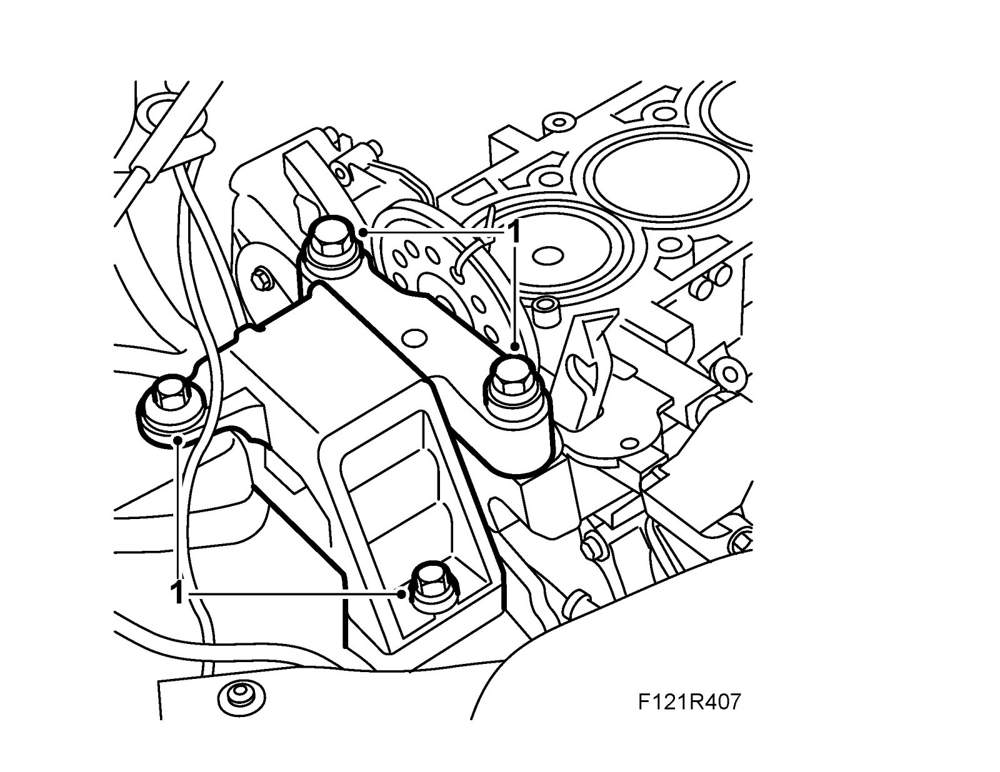
2. Pull up the dipstick pipe from the oil sump.
3. Remove any burrs and carbon deposits from the tops of the cylinders.
4. Raise the car.
5. Place a receptacle under the car and drain the engine oil.
6. Fit the oil plug with a new seal.
Tightening torque 25 Nm (18 lbf ft)
7. Unplug the oil level sensor connector.
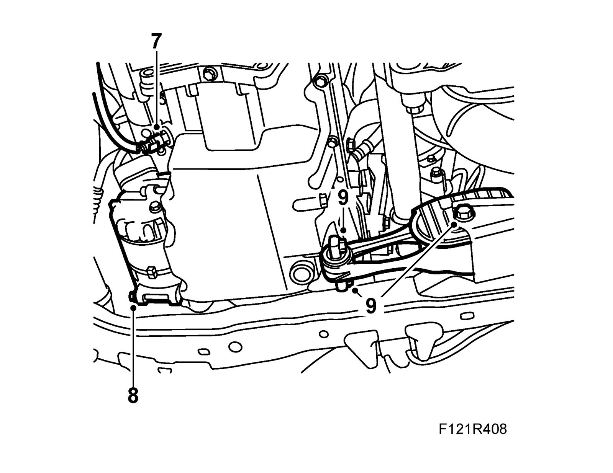
8. Remove the lower fixing bolt for the A/C compressor.
9. Up to M04 inclusive: Undo the rear torque arm bolt and remove the front bolts.
10. Remove the oil pan fixing bolts.
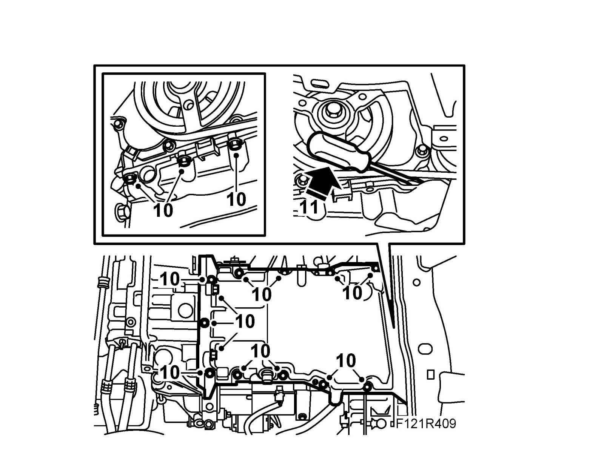
11. Place a screwdriver between the pan and the timing cover at the AC compressor, and carefully pry the oil sump loose.
12. Remove the connecting rods' bearing caps. Push the pistons and connecting rods up out of the cylinder bores.
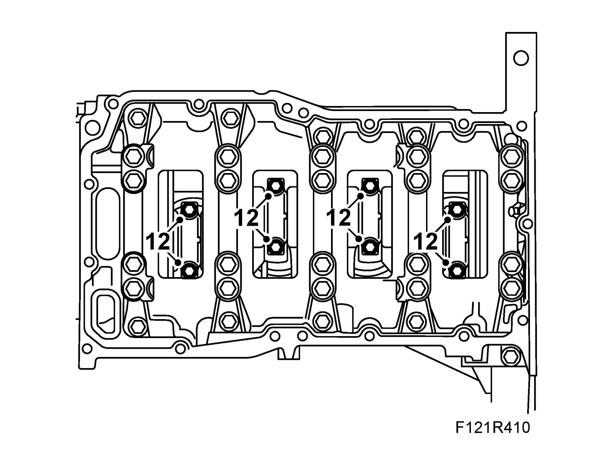
13. Lower the car and carefully lift out the pistons. Note the marking on the pistons and connecting rods so that they can be refitted in their original positions. Fit the bearing shells and bearing caps loosely on the connecting rods so that the parts do not get mixed up.
14. Remove the piston rings.
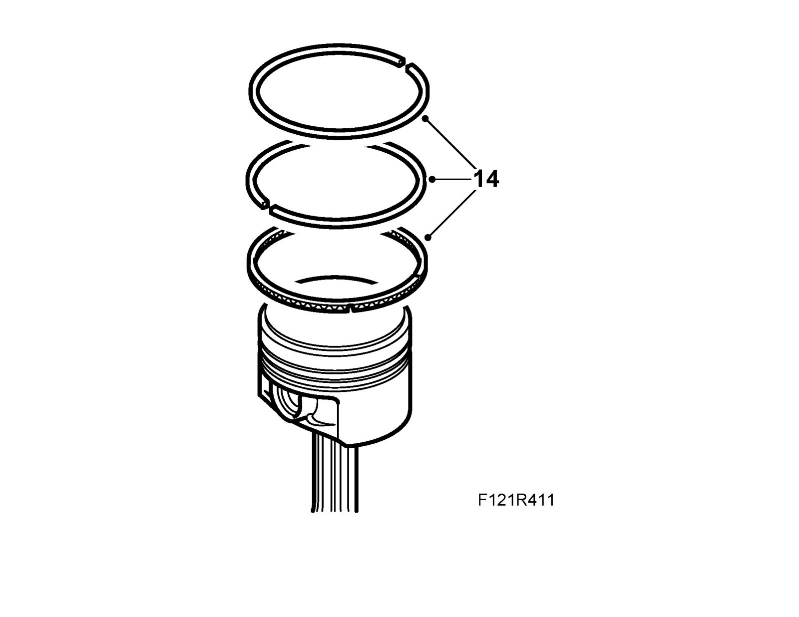
15. Clean any carbon and oil from the piston ring grooves in the pistons.
To fit
1. Fit the oil scraper ring.
Important
Ensure that the spring openings of the upper and lower rings on the three-part oil scraper ring are not located in front of each other.
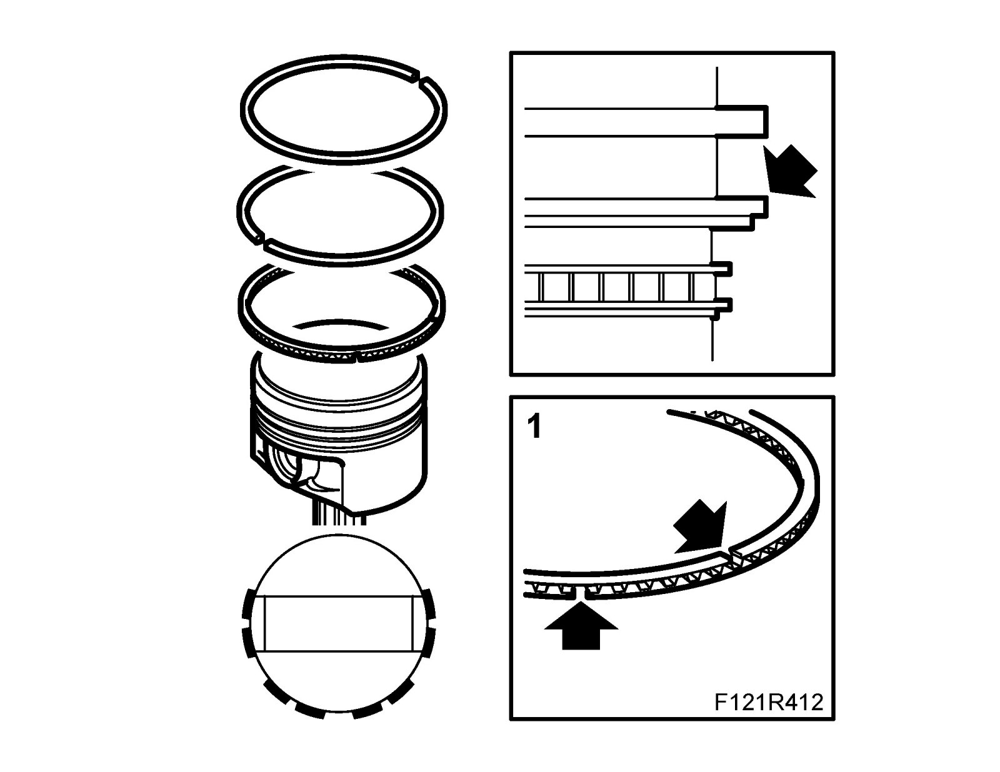
2. Use a piston ring expander when fitting the rings onto the piston.
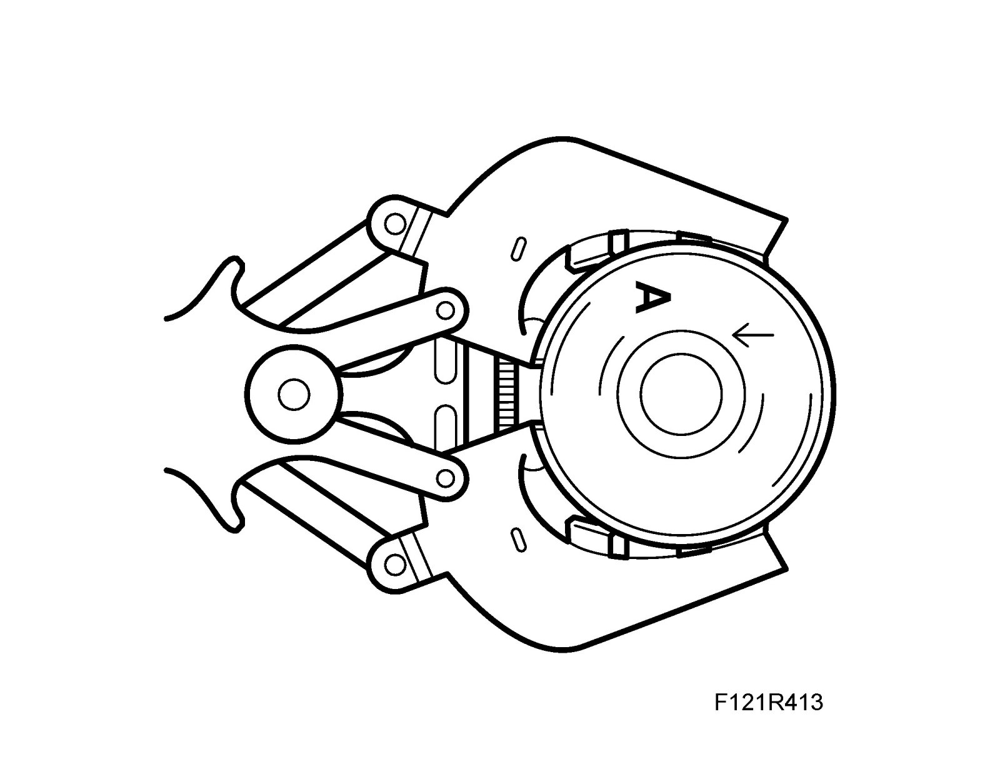
3. The compression rings must be turned with the marking "TOP" facing upward.
Important
The lower compression ring is black and the upper one is silver.
4. Oil the piston and ring before fitting. Turn the compression rings so that the rings' openings are displaced 180° from each other and aligned with the gudgeon pin ends.
5. Oil the piston rings, bearings and cylinder.
6. Fit the pistons using 83 95 113 Piston fitting tool. The arrows on the pistons must point towards the timing chain.
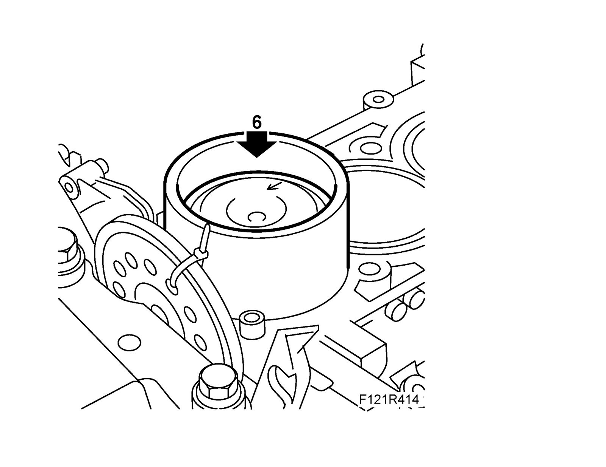
7. Raise the car.
8. Fit the bearing caps with bearing shells. The outer bevelling on the connecting rod and bearing cap must butt up against each other.
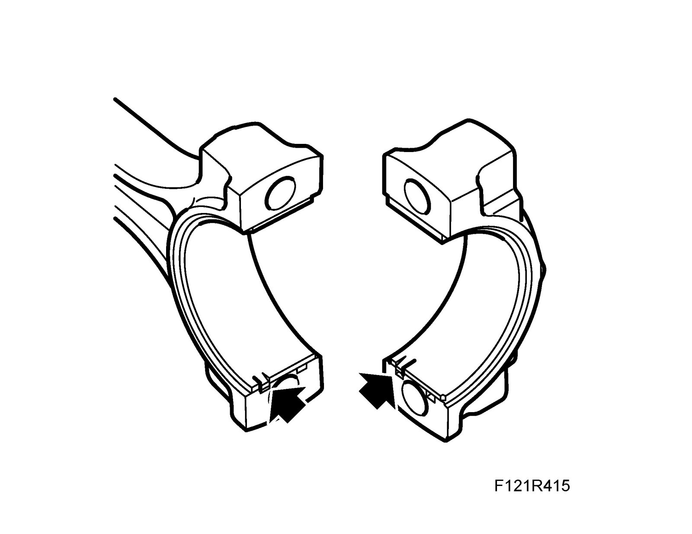
Tightening torque 25 Nm + 100° (18 lbf ft + 100°)
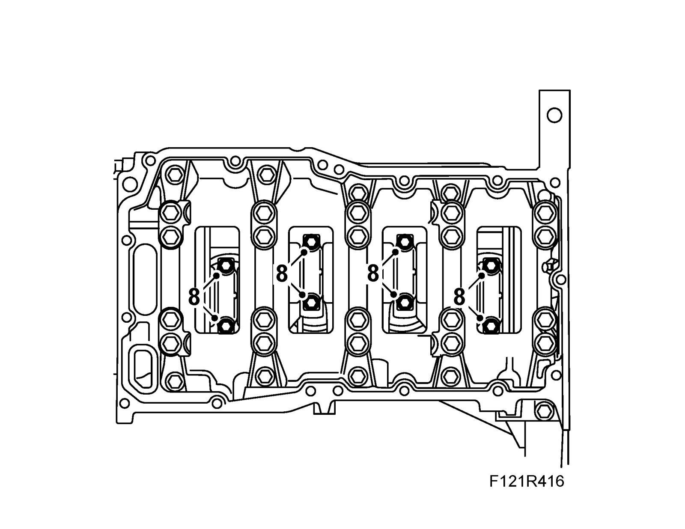
9. Clean the engine block and sump sealing surfaces. Remove any contaminants in the oil sump.
10. Apply a 2 mm thick bead 83 95 691 Flange sealant to the oil sump sealing surface and to the oil strainer suction pipe's connection.
11. Carefully fit the oil sump so that the sealant is not scraped off.
Tightening torque, oil sump 22 Nm (16 lbf ft)
(11a) Tightening torque, bolts in gearbox 70 Nm (52 lbf ft)
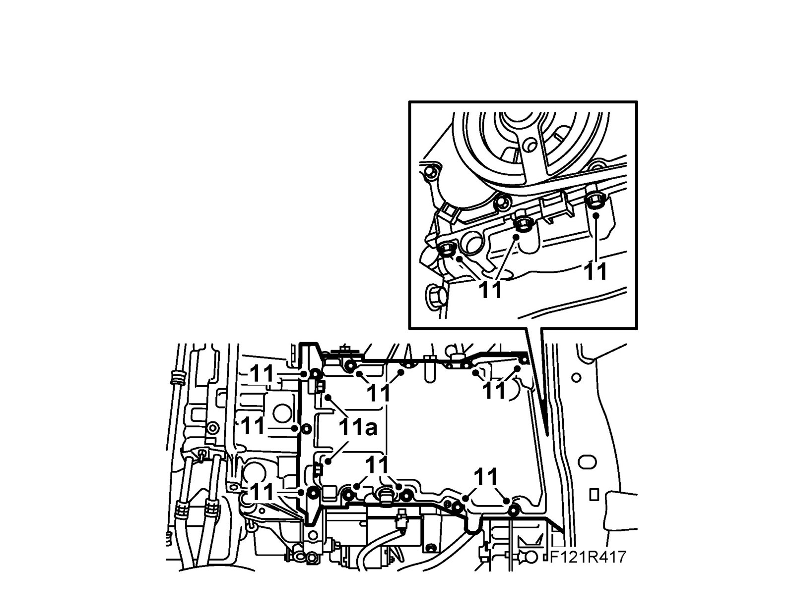
12. Up to M04 inclusive: Fit the front torque arm bolts to the oil sump and tighten the rear bolt.
Tightening torque, front bolts 37 Nm (27 lbf ft)
Tightening torque, front bolts 70 Nm + 90° (52 lbf ft + 90°)
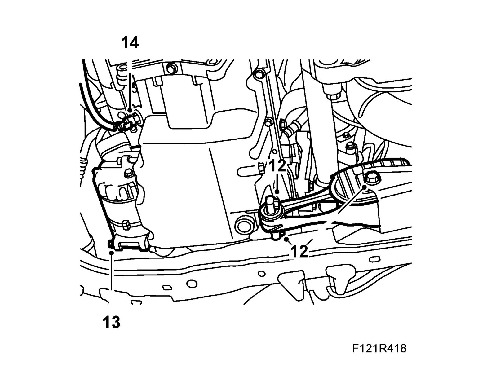
13. Fit the AC compressor lower fixing bolt.
Tightening torque 24 Nm (18 lbf ft)
14. Plug in the oil pressure switch connector.
15. Lower the car.
16. Fit the dipstick pipe in the oil sump with a new O-ring, greased with 30 06 665 Vaseline.
17. Place a jack with wood block under the oil sump and relieve the load from the right-hand engine pad. Remove the right-hand engine mounting.
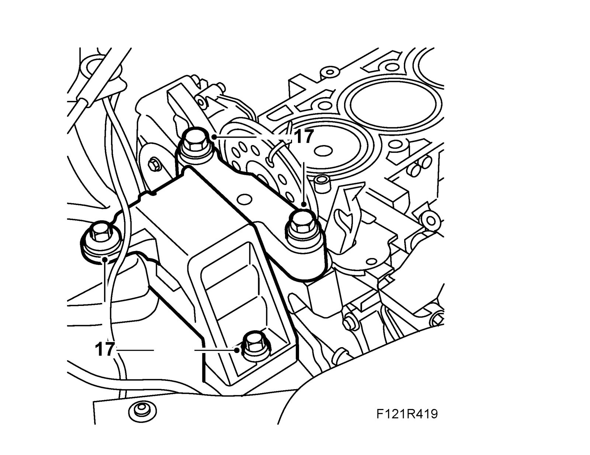
18. Fit Cylinder head.
19. Fill with engine oil.